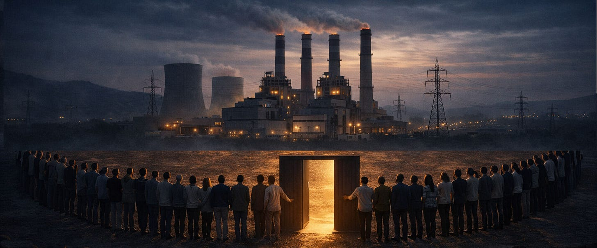

Iran’s deputy minister of youth and sports called on civilians to form human chains around the country’s power plants today, in direct response to Trump’s threats to strike infrastructure if the Strait of Hormuz is not reopened by 8:00 PM Eastern Time tonight. Mainstream coverage is reading this as defiance. The structural reading is more interesting: the same act can be shield, deterrent, propaganda, and off-ramp at the same time, and the question of which Iran intended is separate from the question of how it functions.
Function and intent are different objects. A move can create a face-saving exit for an adversary without being designed to do so. The exit exists either way. Whether to use it is a separate decision.
Here is what the human chain does, regardless of why it was called.
The trap before the announcement was that Trump had issued a maximalist ultimatum with a hard deadline. Backing down on the deadline directly cost credibility — it would become the latest in a sequence of extended ultimatums signaling the threats can be outlasted. Striking the infrastructure risked civilian casualties from collateral damage and a wider war that even US allies were declining to support. There was no clean exit from inside the ultimatum framework as it stood.
The human chain changes the moral terrain of an infrastructure strike. It places visible civilians at the targets. The United States can now decline to strike infrastructure because Iran has placed civilians there, and the United States does not target civilians. This reframes a strategic backdown as a moral choice. “We could have struck but chose not to because Iran put children at the power plants” is a politically survivable narrative. “We threatened and then didn’t follow through because Iran called the bluff” is not.
That reframing is available whether or not Iran consciously designed it.
The deniability of the messenger is structurally interesting. The call came from a deputy minister of youth and sports, not from the supreme leader, foreign ministry, or military command. That is consistent with several readings: it could be calibrated indirect signaling, it could be civic mobilization, it could be domestic propaganda that happens to create external effects. The structural function does not depend on resolving which.
What can be said with confidence is this: an off-ramp now exists that did not exist twenty-four hours ago. Whether Trump uses it is a decision that depends on factors well beyond what the cascade map can read.
The Map Was Already Drawn
Yesterday I published [a structural map](https://ennisai.substack.com/p/the-war-youre-paying-for-without) of how the war in Iran is converting a military conflict into a global supply chain cascade. Twelve mechanisms. Already realized, building, long-term risk. The dependencies that connect a military strike to whether your hospital can sterilize a syringe.
I wrote it because mainstream coverage was treating this as an oil story. It is not an oil story. It is a structural conscription of the entire world into a conflict most of the world has no voice in.
In the twenty-four hours since I published, the chokepoint situation has produced two additional structural developments worth naming. The human chain is one. Two more extend the cascade map in directions the original article did not anticipate.
The Closure Is Being Institutionalized
Iran’s parliament has passed a bill to formalize the collection of tolls on vessels transiting the Strait of Hormuz. This is not a temporary tactical closure being held until a ceasefire. It is the conversion of geographic leverage into a permanent revenue mechanism with legal infrastructure behind it.
The chokepoint coercion mechanism in yesterday’s map assumed the closure was a wartime weapon. The toll bill changes that. The closure is now a policy instrument that can survive the war’s end. Even if a ceasefire is reached, the precedent is established: a country that controls a chokepoint can monetize global passage. That is a structural change to international maritime norms that will outlast this specific conflict, regardless of whether the closure ends tomorrow or next year.
The Second Chokepoint Threat
Aliakbar Velayati, an adviser to Iran’s newly appointed supreme leader, said yesterday that Iran “views Bab al-Mandeb with the same intensity as Hormuz.” Bab al-Mandeb is the chokepoint between Yemen and the Horn of Africa that connects the Red Sea to the Suez Canal. It is the route that survives if Hormuz fails. It is the alternative the global shipping network has been bending toward.
Velayati’s statement is the explicit signal that Iran’s chokepoint strategy is generalizable — that any geographic leverage point Iran or its allies control can be weaponized the same way. The Houthis already have functional capability against Bab al-Mandeb.
The original cascade map assumed one closed chokepoint and one disrupted backup route. If both Hormuz and Bab al-Mandeb close, every ocean shipping route between Asia and Europe runs around the Cape of Good Hope. That is not a delay. That is the structural collapse of efficient global maritime trade.
What The Map Shows Now
The original twelve mechanisms are still operating. The fertilizer cascade is still locked in for the planting season. The pharmaceutical supply chain is still tightening. The cooking fuel crisis in India is still pushing hundreds of millions back to biomass.
What has changed in twenty-four hours is the analytical complexity. Yesterday it was possible to argue that the closure was a temporary tactic in a fast-moving negotiation. The toll bill, the second chokepoint threat, and the human chain together signal something else: the structural game has multiple layers operating simultaneously. Iran is institutionalizing leverage through the toll bill. Iran is signaling generalizable chokepoint capacity through the Bab al-Mandeb threat. Iran is creating moral terrain that complicates infrastructure strikes through the human chain. These are not contradictory moves. They are complementary layers of the same structural position, whether or not they were coordinated as such.
The question of whether any of these moves was intentionally designed to give Trump a face-saving exit is separate from the question of whether one is now available to him. I cannot prove the first. The second is structurally observable.
The deadline expires at 8:00 PM Eastern Time tonight. Whatever happens after that, the cascade map drawn yesterday is the framework for understanding it. Even if Trump uses the exit tonight and the strikes are paused, the strait remains closed. The fertilizer is still not in the ground. The pharmaceutical supply chain is still tightening. The dependencies are still propagating outward through systems that most coverage refuses to assemble in one frame. The human chain may resolve tonight’s strike-or-back-down trap. It does not unwind the cascade.
I am tracking this as it develops. The full original map is [here] https://ennisai.substack.com/p/the-war-youre-paying-for-without .
This analysis was produced using a governed analytical method that extracts structural mechanisms from contested information environments. The method, the instruments, and the governance architecture behind them are proprietary. The output is public because the dependencies mapped here affect everyone.